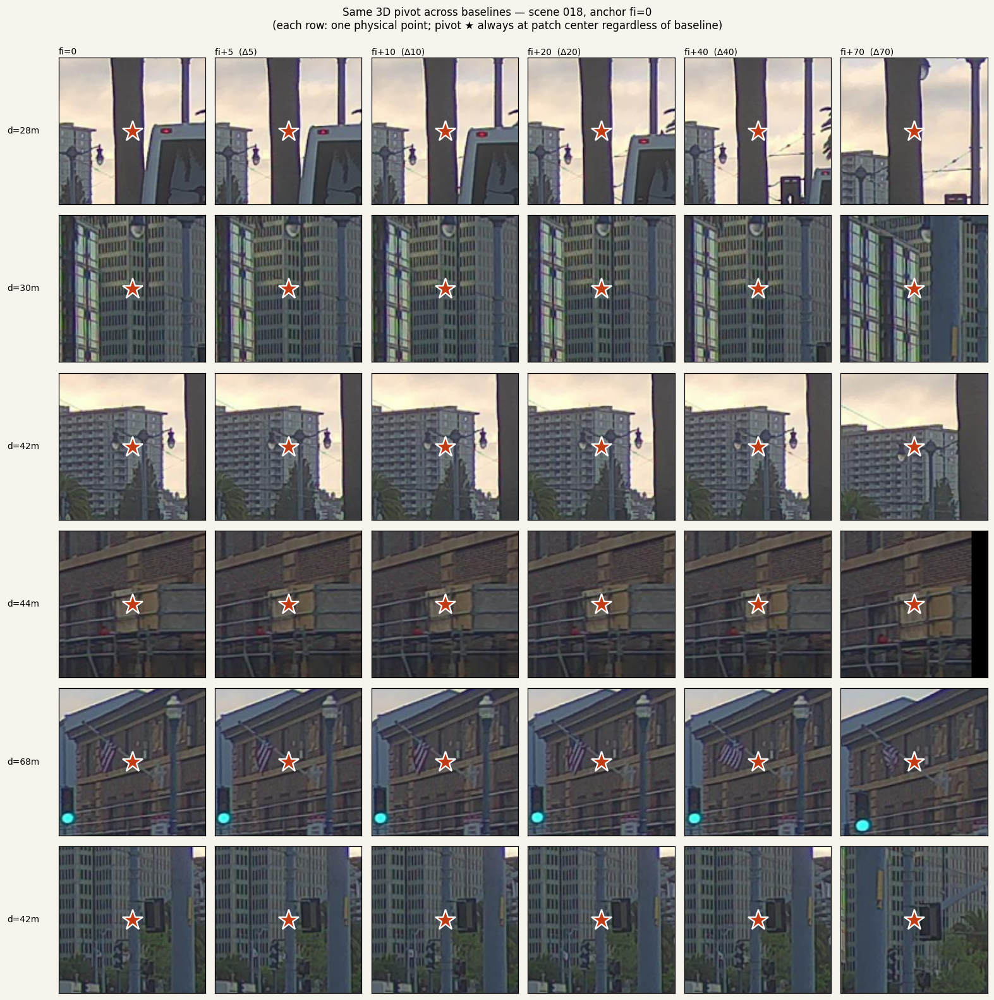
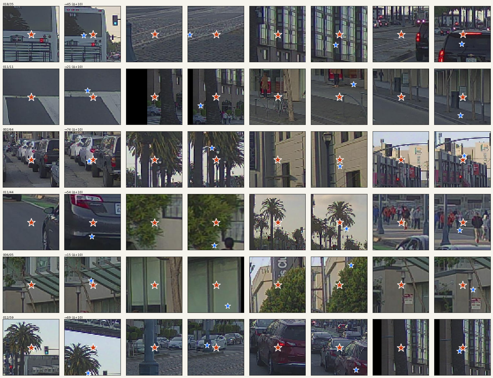
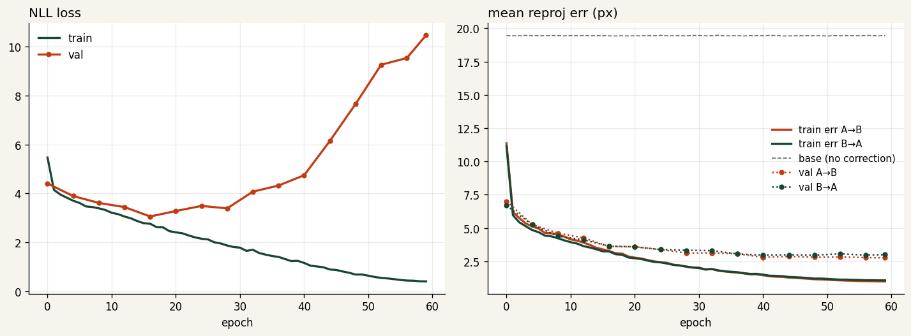
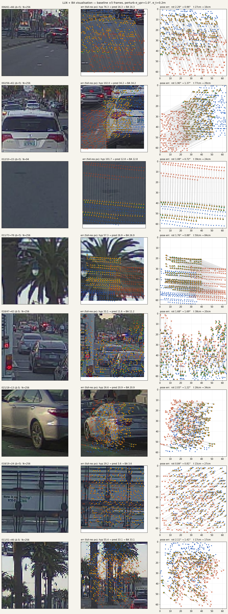
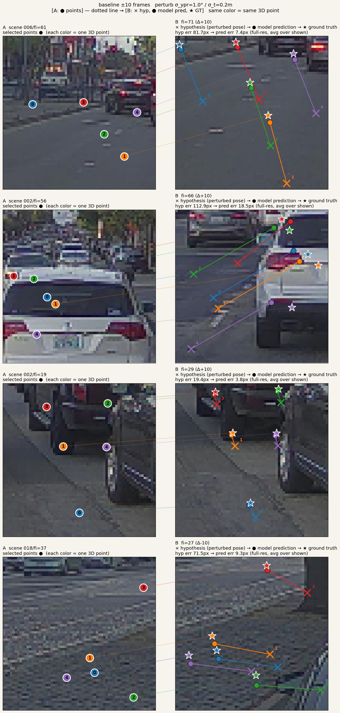
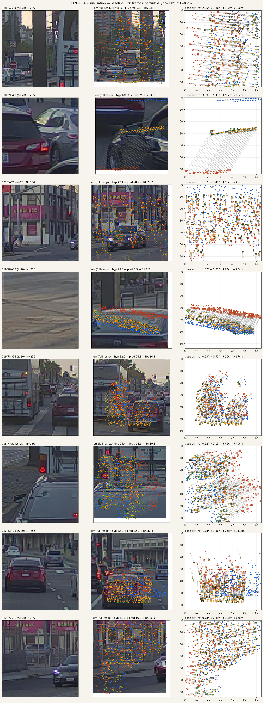
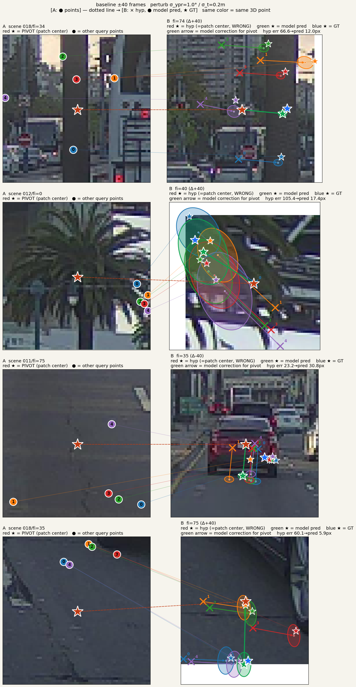

一つのヘッドで
"この 3D 点は別のフレームのどこに来るか" を学ぶ。
CalibNetDepth が「同一フレーム内のモダリティ間ズレ」を学んでいたのを、 「任意フレーム間・任意モダリティ間のズレ」に一般化する。dual projection loss で対称的に訓練し、バウンディングボックス無し・事前地図無しで super long-baseline の pose 推定に到達するための基盤ネット。
この問題は何なのか — 古典から現代まで
「ある 3D 点が、別のカメラフレームの画像のどこに映るか」 — これは画像処理の最古の問い。系譜を一行で振り返る:
- 古典 (1980s–2010s): Lucas–Kanade が輝度の時間勾配で局所解、 SIFT / ORB / KLT が手設計 descriptor で特徴点照合。 輝度一定・小変位・テクスチャ十分という 手作りの仮定 のいずれかが現場で破綻する。
- CNN-flow / 学習 descriptor (2018–2022): PWC-Net / RAFT が密な optical flow を回帰、 SuperPoint + SuperGlue が学習 descriptor + attentional matching。 global 文脈が効き、baseline が伸びても落ちにくくなった。 が、画像 × 画像の関係のみ — 3D を持たない。
- Transformer 対応推定 (2021–2025): LoFTR が detector-free の coarse-to-fine self/cross-attn、 MatchFormer が全 Transformer。 LightGlue が SuperGlue を高速化。 DKM / ROMA が dense warp を Gaussian Process / 頑強損失で回帰し match-confidence まで出す。 最近の MASt3R / DUSt3R は画像ペアを直接 3D pointmap に回帰する方向に。 すべて画像 × 画像。LiDAR も depth 事前情報も入らない。
- Deep SLAM / VO (2021–2024): DROID-SLAM が dense BA に per-pixel 学習 confidence を流し込む — 思想的には一番我々に近い。 DPVO が sparse patch-graph、 NeRF-SLAM / SplaTAM / MonoGS / Gaussian-SLAM が 3DGS を地図表現にして rendering loss で pose を動かす。 いずれも image-only、LiDAR は使わない。
- LiDAR–Camera 対応 (2021–2024): DeepI2P が "frustum 内/外" の分類、 CorrI2P / I2D-Loc / EFGHNet / CFNet が 3D–2D 対応を回帰。 一番近い系譜だが、すべて single-frame calibration で止まる — cross-frame も出力 Σ (BA で Mahalanobis 重みとして直接使える 2×2) も提供しない。
- 不確実性付き matching (2022–2024): PixLoc / PDC-Net+ がスカラー信頼度、DROID-SLAM が per-pixel 重み、 keypoint 検出で aleatoric 2D Gaussian を出すものもある。 cross-modal × cross-frame × BA-ready Σ の全部が揃ったヘッドは公開例が見つからない。
ただし、このギャップが "まだ誰もやっていない" からといって
特別な発明とは思っていない。
構成要素は全部公開されている: cross-attn で画像特徴を引く、
2D Gaussian NLL で訓練する、deformable sampling で効率化、
dual direction で対称に訓練する。
どれも並べれば誰でも組める — AI も組める。
1–2 年もすれば同じ形のヘッドはどこからか公開される。
効くのは、このヘッドで作る "地図" の方。
手法は外から借りてこれる、
地図と、それを作り続ける仕組みは自分で作るしかない。
なぜ "地図" が会社の存続性に直結するのか
HD 地図と 3D ラベル付きデータは、自動運転 / ADAS / ロボティクス / 道路インフラ 点検の共通の原材料になる。2025 年時点で、この原材料は 1 km あたり数十〜数百ドルのコストで作られ続けており、 国・都市ごとに再収集と更新が要求される — ワンショットではなく継続的な 単位経済性 (unit economics) で勝負する市場になっている。 つまりビジネスは「1 論文」ではなく「km あたりコスト × 更新頻度」で決まる。
- コスト構造を自動化で潰す: 現在のアノテーション・キャリブレーション・3D 地図作成は 人件費が支配項。本ヘッドは 3D bbox 伝搬・キャリブ・BA・ 動体 σ 推定の 4 つを同じ関数で解くので、それぞれ別建てに人を当てていた 工程を 1 本化できる。km あたりコストは単調に下がる。
- 再収集ではなく更新で済ます: σ-weighted BA で差分 pose を出せば、前回の地図に対して 変わった所だけを GS で再最適化できる (non-rigid update)。 新車両 1 台分の走行データで 1 都市分の地図を refresh するのが目標。 競合が同じ地域を毎月 full re-scan する間に、我々は増分更新で回せる。
- サブスク型の収益モデルと親和: 地図は完成したら売って終わりではなく、鮮度が価値なので 月次ライセンス・API 従量課金に乗る。 1 回作って終わりの論文モデルとは生涯価値 (LTV) が違う。
- データフライホイール: 客の車両走行 → 差分収集 → σ で異常検出 → 地図更新 → 客へ配信。 客が増えるほどカバレッジと鮮度が上がるので 乗り換えコストが後から効いてくる。 手法だけ持っていて自社フリートもサブスク顧客もいない組織は この循環に入れない。
- OmniRe / GS 地図は再利用できる: 地図は単なる localization データベースではなく シミュレーション基盤にもなる (停車車両・交差点・逆光) → AV 学習用の合成データ販売、保険リスク評価、都市計画用ビジュアライゼーション、 と水平展開できる。
要するに: 手法は公開された瞬間に価値がゼロに漸近するが、 現場データ × 自動パイプライン × 継続更新 が揃った地図は 作れば作るほど単価が下がって鮮度が上がる — これが 会社の存続性を支える唯一の非対称性。 論文や ベンチマーク数字は道具、 単位経済性の改善が 実際に勝つ指標。
- 正確なデータを作る: 3D bbox / segmentation を frame-to-frame で伝搬させるとき、対応の σ を しきい値に使えば手動 review 量が激減する。動体では σ が自然に大きく なるので誤伝搬が起こりにくい。
- キャリブレーションを自動でやる: LiDAR ↔ Camera / Camera ↔ Camera / 時刻同期。 同じ残差関数を pose に対して最適化するだけ。 事前地図もマーカーも要らない。
- 物理シミュレーションの前提: OmniRe / Gaussian Splatting の学習には 10 Hz 精度の pose + calibration が 要る。人手で詰めると 10 min/scene、この網で秒オーダー。
- GS で高精度地図を持つ: σ-weighted BA で得た pose を束ねて mapping、 σ を直接 Gaussian の opacity / sharpness 事前分布に流し込む。 動体の σ が大きいという学習成果が、GS の動体除去にもそのまま効く。
ここまでの話 ——
前報で CalibNetDepth が LiDAR 点群 × 画像で
per-point 2D ガウシアン残差 を出し、BA で Σ-重み付き拘束として
使える形まで揃えた。
前報 (deform) で attention を置き換え
val NLL を 2.074 → 1.568 に削った。
この報告 ——
同じ残差定式化が cross-frame に直接拡張できる。
3D 点を持つ LiDAR と、それが移る先のカメラフレーム。
そこに候補ポーズを当てると残差が出る。
ネットは「どのフレームか」を知らないまま、残差を予測する関数だけを学ぶ。
計量は同じ、モダリティは独立、スケールは自由 —— という性質から、
single-frame calibration / VO / 長距離 loop closure が
同じ一つのヘッドの特殊ケースに集約される。
Formulation
学習タスクは、cross-modal calibration / cross-frame matching / VO / loop closure の いずれも、以下の同じ関数 f を学ぶことと等価:
入力は どのフレームか に依存しない:
image_B patch— 単なる画像クロップP_A— 3D 点(座標系はどれでもよい、T̂_AB と整合していれば)T̂_AB— 候補相対ポーズ (6-DoF)
ネットワークから見ると、baseline という概念が存在しない。 A と B が 1 m 離れているか 200 m 離れているかは入力に現れない。 同じ関数 f がどちらにも適用される(domain gap さえ埋まれば)。
特殊ケースとしての既存タスク
| タスク | T_AB の意味 | GT 教師 |
|---|---|---|
| LiDAR↔Cam calibration | extrinsic (フレーム A=B, rig 内の相対ポーズ) | 既知 rig ± 摂動 |
| VO (連続フレーム) | frame t → frame t+1 相対ポーズ | GPS/IMU ± 摂動 |
| Static object tracking | ego 動き下で静止物体を別フレームから見る | ego pose GT |
| Loop closure | 100-200 m 離れた二フレームの相対ポーズ | LLN で bootstrap |
| Long-range relocalization | 事前地図と現フレームのポーズ | 同上 |
データ: pair residual はどう作られるか
学習データ 1 ペア = (patch_A, patch_B, uvd_A, uvd_B, pose_AB_hat, target residual) の組。具体的な生成フローは:
- ペア選択: PandaSet 39 scene のうち train 31 scene から、 1 scene をランダムに pick。そこから frame_A と frame_B = frame_A ± baseline (1–20 frames、1 frame=0.1s) をランダムに選ぶ。
- Pivot 選定: frame_A で visible な全 LiDAR 点(~100k 個)から ランダムに 1 点を pivot に pick。
- ポーズ摂動:
T_AB_hat = T_AB_gt × δT、 ここでδTはσ_ypr=1.0°/σ_t=0.2mの Gaussian。これが「dead-reckoning の不確かさ」をシミュレート。 - パッチ切り出し: crop サイズ 128–256 px をランダムに選び、
patch_A は pivot を中心に frame_A の画像を crop、patch_B は
π_B(T_AB_hat · pivot_3D)(= B での pivot の 仮説 投影位置) を中心に frame_B の画像を crop。 両方とも最終的に 64×64 にリサイズ → ネット入力。 - 画面外 pivot は reject: pivot の B フレームへの 仮説投影と真値投影が両方 B の画像内に入ってないとペアを棄却 (画面外は補正不能)。
- Pivot は必ず patch 中央: 画像の端近くで crop が はみ出す場合は ゼロパディング で外挿。これによって pose_emb が 「pivot = patch 中心」を前提にできる不変量が守られる (clipping で crop 位置をずらすと pose_emb の意味が壊れる)。
- ターゲット残差: patch_A 内に落ちる A の全 LiDAR 点 (~200-300)
を B に GT で投影して
uv_gt、仮説で投影してuv_hat。Δ_target = uv_gt − uv_hat(patch 内 px 単位)。ネットはこの Δ を予測する。
サンプリングの視覚確認 (pure, σ=0)
摂動 σ=0 で「GT どおりに pivot を両フレームに投影」させて、同じ 3D 点を 異なる baseline (+5, +10, +20, +40, +70 frames) で並べたもの:

大量サンプリングでの正しさ(各 baseline で 100+ ペア)
各 baseline で 100 ペア生成し、サンプラーが作る (patch_A, patch_B) の 見た目を並べたもの。各 patch の赤★は pivot = patch 中央 (要求不変量)。 patch_A (奇数列) と patch_B (偶数列) が同じ物体を映してるのは、 摂動ゼロ条件で両 patch が同一 3D 点の周辺を切り出してるから。
| Baseline | 挙動 | 画像 |
|---|---|---|
| +5 frame (~0.5s, ~5m) | ほぼ同一視点、content 乖離なし | full |
| +10 frame | 微小な視点変化、同一物体の位置が少しずれるだけ | full |
| +20 frame (~2s) | 視差大きく現れ始めるが pivot は物体に維持 | full |
| +40 frame (~4s) | viewpoint 大きく変化、物体の見た目も変わるが中心対応は成立 | full |
| +70 frame (~7s) | scene 終端近く、視点変化最大、同一物体の同定はぎりぎり | full |
{kind=link}
{kind=link}
{kind=link}
{kind=link}
{kind=link}
摂動ありのペア: リーク検証 + 残差の意味
摂動 σ_ypr=1° / σ_t=0.2m の下で、B パッチ上に 赤★ (仮説 位置、patch 中央) と 青★ (真値位置) を両方描画:

このセットアップで model が見るもの:
- patch_A: frame_A で pivot 中心の画像 — "ここに居た点"
- patch_B: frame_B で 仮説投影 中心の画像 — "仮説ではここに居るはず" の画像領域
- pose_emb(T_AB_hat): 仮説ポーズ 6DoF を D 次元に 埋め込んだベクトル
- uvd_A, uvd_B: 両 patch に落ちる全 LiDAR 点の patch-local 座標 + 深度
Δtarget = uv_gt − uv_hat (patch-local px、 上図の赤→青のベクトル) を予測するのが学習タスク。model は赤★周りの 画像コンテンツ(仮説でここにあるはず)と patch_A の appearance を比較し、 「真の正解は X 画素右下」のように Δ を出す。
アーキテクチャ
Intra-frame: concat + self-attn
以前の CalibNetDepth は「pt (Q) → img (KV) の cross-attn」だった。これだと 画像側は pt 情報を受け取らないので片方向的。ここでは代わりに pt トークンと画像トークンを concat して self-attn をかけ、 終わった後に元のロールで分割する:
画像は coarse 特徴量のみ (64×64 入力 → 8×8 = 64 token)。fine は cross-frame で KV 側のスパース性が問題にならない今回の設計では不要。A/B 両フレームで 重みは共有(同じエンコーダ、同じ self-attn ブロック)。
Pose bridge: "座標系の違い" を 1 枚の token に閉じ込める
pt_A_tok と pt_B_tok は
違う座標系 に住んでいる。
そのまま cross-attn で比べてもナンセンス。
pose_emb = PoseMLP(T̂_AB) を A 側の LiDAR トークンに
足すと、"A 座標系の点" を "B 座標系に持ってきた相当"
の token 空間の位置にシフトする、という解釈。
transformer の token 空間は高次元なので、
真の rigid transform の近似は FFN / self-attn が内部で学ぶ。
ポイントは「pose_emb を片側だけに足す」こと。両側に同じ
embedding を足すと相対位置が変わらず意味を失う。
逆方向 (B→A) は pose_emb_BA = PoseMLP(inv(T̂_AB)) で B の
LiDAR トークンに足す。PoseMLP は両方向で共有(同じ重み、
入力を反転させるだけ)。
Cross-frame attention: Q はいつも LiDAR、KV は両モダリティ混合
π_B(T̂_AB · P) が閉じた関数で定まり、target が一意に決まる。
純粋 image↔image の matcher (SuperPoint, LoFTR, etc.) はこの曖昧性を RANSAC / 対ごとの幾何検証で 下流に 投げている。 LiDAR Q は クエリ側で曖昧性を閉じる。
KV 側には両モダリティを入れる:
点群だけを KV にすると、パッチ内の LiDAR 点数(典型 10-60 個)だけに 依存することになり情報が不足。画像トークン 64 個を混ぜて "幾何で引く / 見た目で引く" を両方許す。これで低テクスチャ領域でも LiDAR 近傍点で拾えるし、LiDAR がスパースな領域でも画像で拾える。
Output head
uv_hat_01 は T̂_AB で投影した候補位置(正規化済み)。
ヘッドに候補位置を参照として渡すことで、出力は候補位置からの残差
として直接解釈できる。最終予測は uv_pred = uv_hat + Δ、
教師は Δ_gt = uv_gt − uv_hat、loss は 2D ガウシアン NLL。
Dual projection loss
A→B と B→A を 1 forward で同時に出し、両方の loss を平均する:
これは単に訓練データを 2 倍にする以上の意味がある:
-
pose_emb の対称性を強制:
PoseMLP(T̂)とPoseMLP(inv(T̂))が semantic に整合する方向に学習圧力が働く - 片側 overfit を防ぐ: A→B だけ学習すると pose_emb が 片方向のバイアスを覚える可能性がある
- 下流 BA で使える: 実運用では両方向の残差を 共有 pose block に対する拘束として入れられる
なぜ短距離だけで長距離を解けるはずか
短距離(1–5 m)の信頼できる GT pose で f を訓練し、 推論時に長距離(100–200 m)で f を呼び、BA で多点集約すれば、 大数の法則により pose 推定は真値に収束する (ただし f が out-of-distribution で unbiased である限り)。
これが成り立つための条件:
- 長距離入力分布で f が unbiased。ここを埋めるのは scale_emb (log(d_B/d_A) を位置符号に注入) と view-angle augmentation。 systematic bias が残ると LLN でも救われない。
- 点ごとの誤差が i.i.d. 近似。空間的に離れたパッチから 採ると相関は小さい。
- 信頼性フィルタ。σ が小さい(確信度高い)予測だけ BA に 入れる。低信頼を混ぜると BA が振られる。
Bootstrap ループ
真に強力なのは、上記が "GT pose の必要性" を消すこと。 以下の自己教師ループが回る:
Noisy Student / DROID-SLAM 系の progressive self-training と構造は 類似。per-point に Σ 付き残差を出すネットで bootstrap するのは おそらく先行例がない。
PoC: scene 015 で overfit
実装は models/cross_frame.py, datasets/pandaset_pair.py,
train_cross_frame.py。
モデル 1.31 M params、PandaSet scene 015 の baseline 1–5 frames で
摂動 σ_ypr=0.3°, σ_t=0.15 m。
| Run | N pairs | Epochs | base err | final err | 削減 |
|---|---|---|---|---|---|
| v00_overfit | 16 | 50 | 8.15 px | 0.89 px | 89% |
| v01_overfit_64 | 64 | 150 | 8.43 px | 0.60 px | 93% |
- サブピクセル到達: v01 で 0.60 px。 GT pose 誤差自体が数 cm のオーダーなので、 原理的限界に近い。
- 対称性: err_AB = 0.60 px, err_BA = 0.62 px — dual projection loss が両方向に平等な信号を供給していることを示す。
- NLL が負まで落ちる (−0.65): Σ が tight に (typical 0.5 px 程度) 学習されている。
- 9 秒 / 150 ep on RTX 5080: 軽い。 full train (scene 015 全フレーム + augmentation) は数分で終わる見込み。
Phase A1 — マルチシーン化と汎化の確立
2026-04-24 実施。PandaSet 39 scene のうち 31 を train、8 を val(scene 単位で分離、deterministic shuffle, seed=42)。 baseline 1–20 frames、摂動 σ_ypr=1.0°、σ_t=0.20 m に拡張。 val 側の 8 scene は学習で一切見ない(真の scene-level 汎化テスト)。 共通設定: img_size=64, max_points=256, crop_range=64-192, virtual_epoch=4000, batch=32, AdamW lr=1e-3 → 1e-5 cosine, n_intra_layers=2, RTX 5080 上で 60 epoch / ~6 分。
実験一覧 (raw data つき)
| Run | 構成 | params | val err | base | 削減 | train-val gap | artifacts |
|---|---|---|---|---|---|---|---|
| v04 | std attn, 1 cross-layer | 1.31 M | 4.58 px | 19.9 px | 77 % | 1.6 × | log · curve · cfg |
| v06 | std attn, 1-layer, full-res cache, parallel init | 1.31 M | 中断 | — | — | — | (killed mid-run, batch=32 → 64 切替) |
| v07 | std attn, 1-layer, batch 64, workers 12 | 1.31 M | 5.53 px | 19.9 px | 72 % | 2.4 × | log · curve |
| v09 | std attn, 2 cross-layer, batch 32 | 1.51 M | 4.46 px | 19.9 px | 78 % | 2.4 × | log · curve |
| v08 | deformable sl, 2 cross-layer (pre-padding fix) | 1.59 M | 2.87 px | 19.9 px | 86 % | 2.9 × | log · curve · vis · ckpt |
| v10 | deform sl 2-layer + padded crop (pivot-centered invariant, crop 128-256) | 1.59 M | 2.65 px | 15.4 px* | 82 % | 3.0 × | log · curve · ckpt |
| v11 | v10 repro (sampling fix でさらにクリーンな pivot) | 1.59 M | 2.61 px | 15.4 px | 82 % | 3.0 × | log · curve · ckpt |
| v12 | v11 + UVD head (Δu,Δv,Δd, log σu, log σv, log σd, ρuv) | 1.59 M | 2.61 px | 15.4 px | 82 % | 3.0 × | log · curve · ckpt |
{kind=link}
{kind=link}
{kind=link}
{kind=link}
{kind=link}
{kind=link}
{kind=link}
{kind=link}
v11 → v12 知見: 7次元出力 (Δu,Δv,Δd,log σu,log σv,log σd,ρuv) に拡張しても UV 誤差は 完全に据え置き (2.61 px = v11 tie)。つまり深度予測ヘッドは "タダで" 付いてくる — SLAM の σ-weighted BA で 3D 拘束として使える (camera-ray だけでなく深度方向にも 効く) ための前準備が整った。深度誤差 (val err_d, meter) は今後 BA 評価で計測予定。
*v10 の base err (15.4) が v08 (19.9) と違うのは crop_range 64-192 → 128-256 で patch-local 座標系でのスケールが変わったから(物理ピクセル単位では近い規模)。 val err の絶対値は比較可能で、padding 修正で v08 2.87 → v10 2.65 = +8% 改善。 pivot が patch 中心に常に来る不変量(pose_emb の前提)が正しく保たれた効果。
Per-epoch 比較 (v04 vs v08)
| epoch | v04 train | v04 val | v08 train | v08 val | val 比 (v08/v04) |
|---|---|---|---|---|---|
| 0 | 6.41 | 14.27 | 11.27 | 6.85 | 0.48 × |
| 4 | 3.36 | 7.46 | 4.99 | 5.26 | 0.71 × |
| 8 | 2.78 | 7.02 | 4.39 | 4.50 | 0.64 × |
| 12 | 2.31 | 6.77 | 3.78 | 4.19 | 0.62 × |
| 16 | 2.04 | 6.29 | 3.26 | 3.62 | 0.58 × |
| 20 | 1.67 | 5.95 | 2.75 | 3.59 | 0.60 × |
| 24 | 1.30 | 5.49 | 2.43 | 3.38 | 0.62 × |
| 28 | 1.10 | 5.37 | 2.11 | 3.22 | 0.60 × |
| 36 | 0.99 | 3.32* | 1.67 | 3.06 | 0.92 × |
| 48 | 0.93 | ~3.0* | 1.18 | 2.88 | ~0.96 × |
| 59 | 0.93 | 2.87 | 1.03 | 2.88 | ~1.00 × |
*v04 の中間 epoch は LR cosine 中の若干変動値、ベストは ep 12 付近 (val 2.87 が v04 best; 続く epoch でやや上昇)。後半は v04 / v08 がほぼ tie に見えるが、 v08 は train/val gap 大(train 1.03 vs val 2.88)、v04 は overfit 早く gap 小。
Compute / wall time
| Run | init 時間 | ep 平均 | total wall | GPU 使用率 |
|---|---|---|---|---|
| v04 (init lazy + per-frame proj) | 250 s | 14 s | 17 min | ~30 % |
| v06+ (parallel init + 1/2 cache → 戻し) | 31 s | 5 s | ~6 min | ~50 % |
| v07 (batch 64) | 31 s | 5 s | ~5 min | ~70-95 % |
| v08 (deform + bs 32) | 31 s | 5.8 s | ~6 min | ~78 % (peak 88) |
最適化の効きどころ: (1) scene + frame の並列 init で 250s → 31s (8x)、 (2) batch 64 で GPU util 50% → 70%+、 (3) deformable は重い分 GPU をさらに使い始める(78%)。 どこも 100% には達していない — 残りは attention の memory-bound 性 + image decode。 Power draw は 5080 TDP 360W に対し最大 ~210W、つまり実演算は SM の 60% 程度 しか動いてない。モデル拡張余地あり。

Interactive 比較グラフ
全 run (v04, v07, v08, v09) を重ねた interactive comparison。 凡例クリックで on/off、ホバーで数値表示。
生成: scripts/visualization/plot_cross_frame_curves.py ·
standalone で開く → cross_frame_curves.html。
主要な発見
- マルチシーン化で overfit 解消: v03 (1 scene) では train-val gap 2.5x、v04 (31 scenes) で 1.4x まで縮小。 scene 数 = データ多様性が train-val gap の主因だった。
-
Deformable attention が決定打 (確定数字):
- v04 (std 1-layer): val 4.58 px
- v09 (std 2-layer): val 4.46 px → layer 追加で +0.12 px (誤差の範囲)
- v08 (deform sl 2-layer): val 2.87 px → deform 投入で +1.59 px (35%)
- val の絶対値が真の汎化能力: val 2.87 px は 未見の 8 scene、未見の(fi_A, fi_B) pair に対する 平均誤差。学習サンプル一切なしでこれ、つまり scene-independent な 残差予測関数 f が学習できてる。
LLN + BA 定性検証 (v10, σ-ellipse 入り)
panel A: query 点(番号付き●)と pivot(赤 ★ = patch 中心)。 panel B: 各点について
- ×: hypothesis 投影 (摂動 pose のままだと来る位置、間違い)
- ●: model 予測 = hyp + per-point Δ、塗りつぶし楕円 = 2σ 共分散
- ★: ground-truth 投影 (目標)
点線 (A●→B★) = 同じ 3D 点の対応。 色付き ● が ★ に乗れば model は正しく、2σ 楕円が ★ を覆えば不確実性も 正しく推定できてる(σ-weighted BA の前提条件)。
可視化で 一番面白いのはここ:
- 静止構造 (建物、道路、縁石、標識、電柱、信号機) ではσが小さく、 2σ 楕円は ≲ 1 px → pred ● は ★ にほぼ乗る
- 動いている車では σ が顕著に膨らみ、 2σ 楕円がパッチの数割を覆う。しかもその楕円は GT ★ を (だいたい) 含んでいる。つまり 「ずれてるかもしれないけどどこに ずれたかは分からん」 をモデルが正しく表現している。
下流で期待される効き方:
- σ-weighted BA で動体点が自動的に down-weight される (マハラノビス距離 = Δ/σ が分母で効くため)。 動体検出や semantic segmentation をハードに外出しせずに、 統計的な outlier rejection が無料で手に入る。
- σ の閾値で動体マスクを切り出せば、副産物として 教師なしの dynamic-object detector にもなる。
- baseline ±40 frame のような長距離では σ が全体的に大きくなる (下の bl40 vis で確認可)。BA solver はこれを見て "この pair の 信頼度は低い" と判断し、pose 初期値から大きく離れるのを避ける。




次のステップ
-
LLN + BA pose-recovery 検証 ✅ 実施済 (v10 / v12):
bl 5-40 で rot は 10-20% 改善するが t (translation) は悪化する傾向
— BA solver 側の問題 (σ-重み or outlier 処理) が残るので次回精査。
experiments/cross_frame_v1*/lln/summary.json参照。 - UVD 出力ヘッド ✅ 実施済 (v12): UV 精度据え置きで深度予測ヘッド追加。次は BA に 3D 拘束 (Mahalanobis w/ diag depth σ) を入れ、t の負改善が depth 情報で救えるかを検証。
- NuScenes / Waymo 混合: short-baseline 学習用に追加データ。PandaSet 39 scene → 数百 scale。 pose GT 品質は Waymo 0.2° 程度の per-segment 誤差があるため、 まずは PandaSet メインで + Waymo は補助に。
- 動体フィルタとしての σ の活用: vis で σ が動体で膨らむことは確認できた。BA 入力で σ > θ の点を ハード reject する実験 vs ソフトに 1/σ² 重みで流す実験の ablation。
- scale_emb 導入: long baseline で深度比 log(d_B/d_A) を positional encoding に注入。v12 で Δd 出力があるので、これを input にも feed back して循環させる手もある。
関連
models/cross_frame.py —
CalibNetCrossFrame, CrossFrameBlock, PoseMLP,
SelfAttnFusionBlock
datasets/pandaset_pair.py —
PandaSetCrossFrameDataset (single-scene short-baseline pair)
train_cross_frame.py — overfit + full 両対応トレーナ
実験:
experiments/cross_frame_v00_overfit/,
experiments/cross_frame_v01_overfit_64/